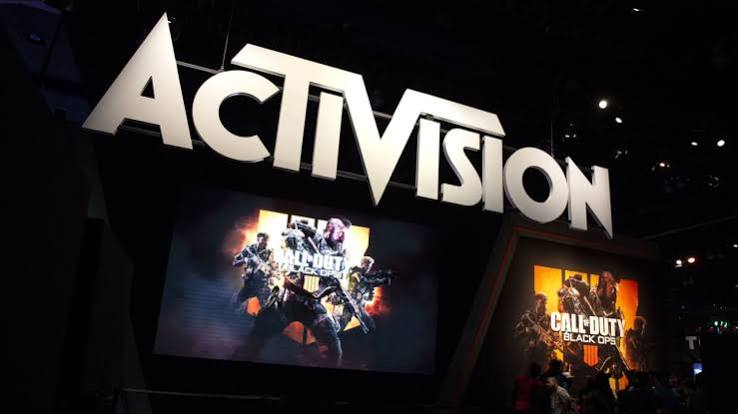
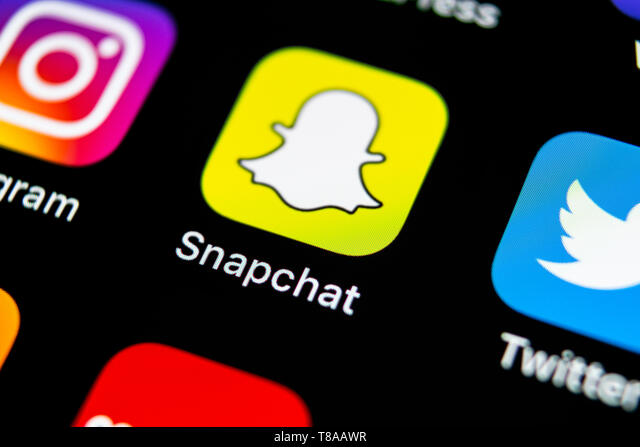
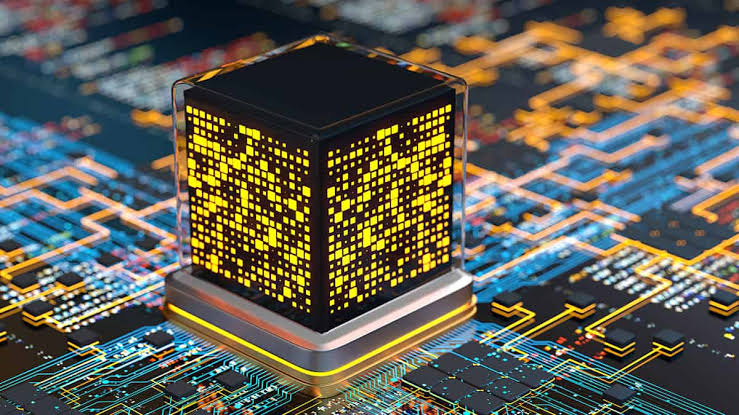

Microsoft buys Activision Blizzard for $68.7 billion
Amanda Silberling

Snapchat has faced increasing criticism in recent years as the opioid crisis plays out on social media, often with tragic results. In October, an NBC investigation reported the stories of a number...

Taylor HatmakerDespite all the buzz, quantum investments are still not mainstream: there were about 90 quantum investments in 2021.

Maria LepskayaToday marks the launch of the Roll app, which aims to create an easy way for creators to make an extra buck while portraying a potentially more authentic version of themselves to their fans.
Author name